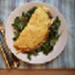

Easy Egg Recipe

Fig And Brie Omelet
Prep time
20mins
cook time
20 mins
Total time
40 mins
SERVES: 2
Ingredients
2 lg eggs + 1 egg white
1 tsp unsalted butter
2 oz Brie, thinly sliced
1 Tbsp fig jam
1 c arugula, lightly packed
Directions:
LIGHTLY beat eggs and egg white in a small bowl. Season with salt and pepper.
WARM butter in a small nonstick skillet over medium heat, and place Brie and fig jam nearby.
PLACE arugula on a plate.
ADD beaten eggs to skillet and whisk briskly for 1 minute. Let cook undisturbed for 30 seconds, then, using a rubber spatula, push egg away from edges of pan, tilting so runny egg fills in the gap, until egg is mostly set.
DOLLOP jam in the center of the omelet, distributing it towards one side, and arrange cheese over jam. Flip one-half of the omelet over the over half. Slide omelet on top of arugula.
Serve Hot. Enjoy!
NUTRITION
(per serving) 420 cal, 29 g pro, 11 g carb, 2 g fiber, 8 g sugars, 28 g fat, 15 g sat fat, 880 mg sodium